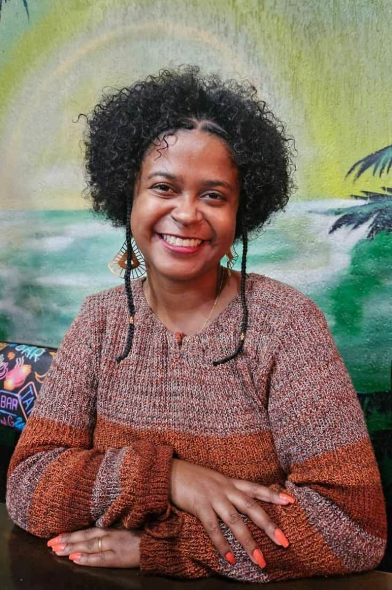

Pesquisadora da língua Changana (Moçambique). Estudo a morfossintaxe da marca de objeto e das construções aplicativas em Changana, no âmbito do Programa de Pós-Graduação em Estudos Linguísticos (POSLIN/UFMG).

Sou doutoranda em Linguística Teórica-Descritiva pelo Programa de Pós-Graduação em Estudos Linguísticos (POSLIN) da Universidade Federal de Minas Gerais (UFMG). Desenvolvo um estudo morfossintático de aspectos relacionados à estrutura verbal da língua bantu Changana, falada em Moçambique.
Essa pesquisa se insere no projeto de Descrição, documentação, revitalização e análise teórica de línguas indígenas brasileiras e de línguas africanas, sob orientação do Prof. Dr. Fábio Bonfim Duarte e coorientação do Prof. Dr. David Alberto Seth Langa.
Antes do doutorado, conclui o mestrado em Linguística Teórica e Descritiva (UFMG, 2021–2023), com dissertação sobre o comportamento dos objetos pós-verbais em construções aplicativas do Changana, e a graduação em Letras (UFMG, 2016–2021).
UFMG · Tese: Análise formal da marca de objeto em Changana
UFMG · O comportamento dos objetos pós-verbais em construções aplicativas do Changana
Universidade Federal de Minas Gerais (UFMG)
Minha pesquisa investiga, sob uma perspectiva formal, como a língua Changana marca e organiza seus objetos verbais — um fenômeno central para entender a gramática das línguas bantu.
No doutorado, desenvolvo uma análise formal da marca de objeto em Changana, sistematizando como o fenômeno se manifesta na língua e contribuindo para a tipologia da marcação de objeto em línguas bantu de modo geral.
No mestrado, investiguei o comportamento assimétrico e simétrico dos objetos aplicado e direto em construções aplicativas do Changana, e a derivação sintática envolvida nesse processo.
O Changana (também chamado Xichangana ou Tsonga-Changana) é uma língua bantu falada principalmente nas províncias de Maputo, Gaza e Inhambane, no sul de Moçambique, além de comunidades na África do Sul e no Eswatini.
Como muitas línguas africanas, o Changana tem uma tradição predominantemente oral e ainda carece de descrições gramaticais detalhadas. Documentar sua morfossintaxe contribui para a preservação da língua, para a formação de pesquisadores moçambicanos e brasileiros, e para a linguística bantu como um todo.
Esta pesquisa é desenvolvida em parceria com a Universidade Eduardo Mondlane (Moçambique), por meio da coorientação do Prof. Dr. David Alberto Seth Langa, e se insere em um projeto mais amplo de descrição e documentação de línguas moçambicanas em colaboração entre UFMG e instituições moçambicanas.
Se você é falante de Changana/Xichangana, pesquisador(a), estudante ou tem interesse em colaborar com dados, revisão linguística ou parcerias de pesquisa, eu adoraria ouvir você.
Entrar em contatoOs links abaixo levam às páginas oficiais das editoras/periódicos. Estou atualizando esta seção com links diretos de compra e acesso.
* Links serão atualizados conforme disponibilidade nas páginas das editoras/periódicos.
Com Fábio Bonfim Duarte · Apresentação de trabalho/Congresso
Apresentação de trabalho/Congresso
Com Fábio Bonfim Duarte · Conferência ou palestra
Conferência ou palestra
Com Fábio Bonfim Duarte · Seminário
Com Fábio Bonfim Duarte · Congresso
Para colaborações de pesquisa, convites acadêmicos, dúvidas sobre Changana ou apenas para dizer olá — entre em contato.
Resposta em até alguns dias úteis.